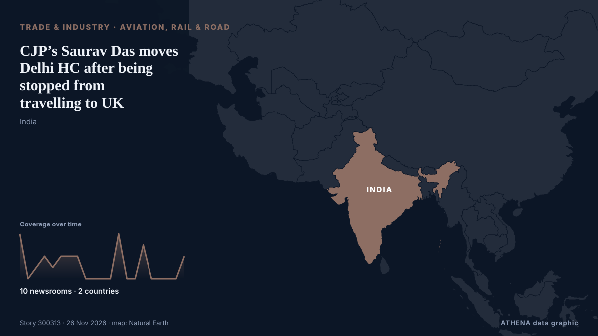

Trade, Industry & Infrastructure
SponsoredPresented by  Cybernetics and Artificial Intelligence Lab Welcome to the Cybernetics and Artificial Intelligence Laboratory, established at the Department of Business Administration of the National and Kapodistrian University of Athens. The lab is headed by Professor Dimitrios Thomakos. The lab aims to do research that can be published in top venues. Our research uses tools and methods of Artificial Intelligence, and lies in the following areas: - Forecasting - Decision making - Cyber security - Finance We are always looking forward to collaborating with exceptional students!
Cybernetics and Artificial Intelligence Lab Welcome to the Cybernetics and Artificial Intelligence Laboratory, established at the Department of Business Administration of the National and Kapodistrian University of Athens. The lab is headed by Professor Dimitrios Thomakos. The lab aims to do research that can be published in top venues. Our research uses tools and methods of Artificial Intelligence, and lies in the following areas: - Forecasting - Decision making - Cyber security - Finance We are always looking forward to collaborating with exceptional students!

Aviation, rail & roadCJP’s Saurav Das moves Delhi HC after being stopped from travelling to UK
The Ministry of External Affairs said the passport office had asked Das to respond to a notice over alleged discrepancies and not use the document until then. from Scroll.in
| 13 Nov | 85 |
|---|---|
| 14 Nov | 77 |
| 15 Nov | 66 |
| 16 Nov | 122 |
| 17 Nov | 96 |
| 18 Nov | 102 |
| 19 Nov | 73 |
| 20 Nov | 99 |
| 21 Nov | 33 |
| 22 Nov | 60 |
| 23 Nov | 106 |
| 24 Nov | 71 |
| 25 Nov | 59 |
| 26 Nov | 1 |
Oil tanker catches fire after hitting naval mine in Strait of Hormuz: Iranian Navy
An oil tanker caught fire and was left immobilized Wednesday after striking a naval mine in a restricted area east of the Strait of Hormuz, the Iranian Navy said, Anadolu reports. from Middle East Monitor
US proposes new tariffs on 14 trading partners, including China and the EU
The US proposed new tariffs on 14 trading partners on Wednesday. from The Next Web
Maersk Orders 12 Ultra-Large Dual-Fuel Container Ships
Maersk has ordered 12 ultra-large container ships scheduled for delivery in 2030 and 2031, which will become the biggest vessels in its fleet, a company spokesperson said on Tuesday.The vessels, each… from MarineLink
In Lebanon, the opening of a second airport reflects political shifts
Kleiat Airport, located on the Mediterranean coast, about 20km from the border crossing to Syria, will offer another gateway to Lebanon. from The Straits Times
IRGC Reports Three Tankers Exploded in Hormuz After Hitting Mines
Iran's Revolutionary Guards navy reported that three tankers exploded and caught fire in the Strait of Hormuz after striking naval mines ... from IranWire
Iran says it is not concerned about US naval blockade
Dubai: Iran is not concerned about the US naval blockade as cargo clearance through its non-southern borders has increased and reserves of strategic goods remain strong, First Vice President Mohammad… from Deccan Herald
Explosion occurs on LNG carrier in Strait of Hormuz
Ahmad Hayat-Moghaddam, Vice Chairman of the Iranian Parliament’s National Security and Foreign Policy Committee, announced on Tuesday, N ... from IranWire
APM Terminals Maasvlakte II and Port of Rotterdam Authority take next step in terminal development
APM Terminals Maasvlakte II and the Port of Rotterdam Authority are moving forward in terminal’s development with preparations for a. from Cyprus Shipping News
EU officially limits imports of Chinese hybrid vehicles
Brussels and Beijing agreed to limit exports of Chinese plug-in hybrids and other hybrid vehicles to the 27-nation bloc as part of a deal to avoid a trade war. from Free Malaysia Today
Tata Steel shares rise 1%, APL Apollo falls 9% as brokerages turn cautious on ₹28,000 cr deal
Brokerages largely negative on APL Apollo, mixed on Tata Steel. from The Hindu BusinessLine
Nguyen Hue Pedestrian Street lights up with 3D mapping show on Vietnam Culture Day
A spectacular 3D mapping show lit up the facade of Rex Hotel Saigon on Nguyen Hue Pedestrian Street on Tuesday night as part of Ho Chi Minh City's Vietnam Culture Day celebrations. from Tuoi Tre News
Hormuz crisis drives global energy supply shock
Disruptions to shipping through the Strait of Hormuz have triggered the world's largest energy supply shock, prompting Gulf producers to consider billions of… from Daily Tribune
Hagia Sophia's Hidden Tunnels Uncovered
Restoration work in Istanbul has uncovered 420 meters of underground passages, ancient water infrastructure and architectural remains that may predate the sixth-century monument. from to vima
Palace denies final deal to buy 100% of US food, energy supplies
Malacañang on Tuesday, 24 November 2026, maintained that no agreement had been finalized requiring the Philippines to source all its agricultural and energy… from Daily Tribune
Ansarallah unveils massive Mokha depots packed with Saudi and Balkan munitions
Footage released on November 22 by Yemen’s Ansarallah shows warehouses and metal containers packed with munitions and gear seized from Saudi-affiliated mobilization camps in Mokha during Operation… from Tehran Times
Uzbekistan and Jordan to expand pharmaceutical cooperation
Uzbekistan and Jordan have agreed to expand cooperation on pharmaceutical regulation, drug safety and specialist training, with a joint roadmap planned. from UzDaily
Russia to supply Afghanistan with $200 mln worth of goods
Head of the Business Council for Cooperation with Afghanistan under the Russian Chamber of Commerce and Industry Dmitry Antonov emphasized that agreements were reached during the Russian-Afghan… from TASS (English)
China Southern Airlines unit to buy 50 Boeing 737-8 planes
The agreement marks the US planemaker's first major order from China in almost a decade. from Al Jazeera English
4th Abu Dhabi Maritime Awards honours winners
Under the patronage of His Highness Sheikh Hamdan bin Zayed Al Nahyan, Ruler’s Representative in the Al Dhafra Region; in. from Cyprus Shipping News
Flights delayed at Chicago O’Hare airport as ground radar system suffers outage
Chicago’s O'Hare International Airport faced a brief ground stop due to staffing challenges at TRACON, which spanned from 10:40 am to 12:15 pm, coinciding with the Thanksgiving travel rush. from Times of India
Thailand vehicle production hits 6-year low after flooding
BANGKOK: Thailand’s car production in October fell 35.19% from a year earlier, compared with a 6.08% decline in September, the Federation of Thai Industries said on Tuesday. from Business Recorder
Singapore Shipping orders PCTC pair from Guangzhou Shipyard International
First partnership to deliver LNG dual-fuel car carriers for the owner’s long-term fleet renewal and low-carbon shipping road map. from Seatrade Maritime
DR Congo halts cobalt exports again amid drop in prices
The Democratic Republic of Congo will again suspend cobalt exports starting at the end of the month in an attempt to boost prices. from Africanews (English)
Le Pen Condemns Turkey Over Libya Maritime Deal, Cites UNCLOS
French far-right politician backs Egypt's position in eastern Mediterranean dispute; Greece's considers agreement as baseless and illegal. from to vima
Belgium inaugurates Europe’s largest satellite factory
Belgium’s King Philippe on Tuesday, Nov. from Kyiv Post
Saddam Hussein's Boeing 747 could be yours for $900,000
An Iraqi government plane used by former dictator Saddam Hussein has been put up for auction with an estimated value of $900,000. from The National
Disruptions to regional trains, buses, trams on 2nd day of public transport strike
Public transport users can again expect disruptions to regional trains, buses, and trams today. from NL Times
At least 36 trains robbed; 14 accused in $22.5 million Nike cargo theft racket in US
Fourteen people have been indicted in the US for allegedly stealing over $22.5 million worth of cargo from at least 36 freight trains in Southern California. from Times of India (World)
Israel approves flydubai’s return to Tel Aviv pending security clearance
The decision was made after a visit to the UAE by the Israeli Transportation Ministry director-general. from The Straits Times
Russia to Spend $576m on Kaliningrad Supply Ferries
Russia will spend 47 billion roubles ($576 million) to build two giant rail ferries to ensure uninterrupted supplies to its Baltic exclave of Kaliningrad amid rising tensions in the region, Prime… from MarineLink
Indonesia Factory Fire Kills 26 as Rescuers Search for Missing Workers
At least 26 people have died and eight others remain missing after a fire tore through a confectionery factory in Indonesia’s Banten province, as authorities investigate the cause and possible… from Khaama Press
Iran prepares oil tanker convoy to break US naval blockade, threatens Gulf facilities - report
Iran is reportedly preparing a convoy of more than 14 oil tankers to challenge the US naval blockade, as media outlets close to the IRGC threaten attacks on Gulf energy infrastructure. from The Jerusalem Post
24-hour strike by Greek seafarers on November 25
Athens, Greece (Ports Europe) November 23, 2026 – Greek seafarers’ unions will start a nationwide 24-hour strike on November 25, from 00:01 to midnight. from Ports Europe
UN food agency chief warns wars jeopardize food aid for 7.3 million more people
World Food Programme Executive Director Luke Lindberg warned on Monday that shipping chokepoints linked to… from BusinessWorld